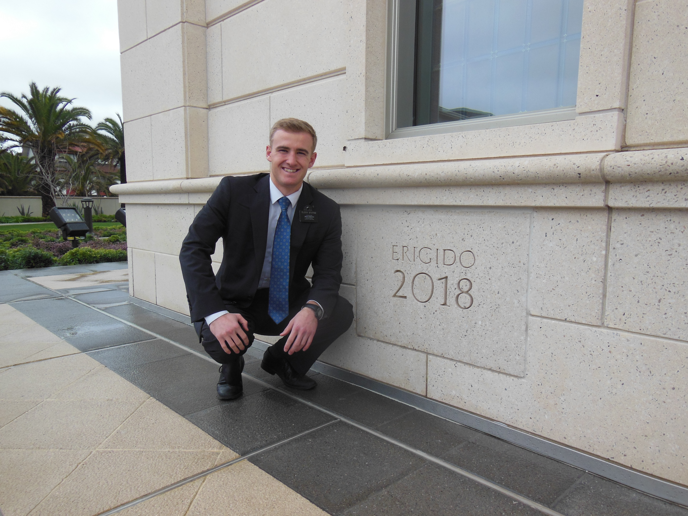

A Mission in Chile
From July 2017 to July 2019, I had the opportunity to serve a mission for The Church of Jesus Christ of Latter-day Saints. Over the course of two years, I had the chance to learn spanish and teach the people of Chile about Jesus Christ and how He has restored His church to the earth in our time. I loved serving and teaching the people of Chile how they can have peace and joy in their lives as they "Come unto Christ."
The Concepción Temple
The highlight of my mission was when the Chile Concepción Temple was dedicated. President Nelson came to dedicate it along with Elder Stevenson. As missionaries, we prepared for this event by telling everyone about the dedication and inviting them to attend. If you'd like to learn more about the temples of The Church of Jesus Christ of Latter-day Saints, click here.
See some of my other posts: